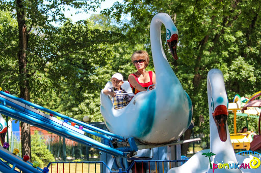
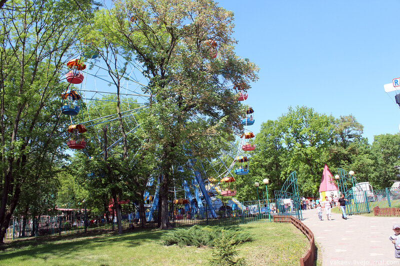

Парк имени В.И.Ленина
- Режим работы: круглосуточно
- Стоимость услуг: цены на аттракционы уточняйте на сайте, вход бесплатный
- Местоположение: ул. Николая Островского, 20, Белгород, Белгородская обл.
В парке есть всё для комфортного времяпровождения как детей разных возрастов, так и взрослых.
На прогулочных аллеях установлены удобные скамейки,
рядом с которыми можно насладиться видами симпатичной
парковой архитектуры.

По выходным и праздничным дням проводятся развлекательные мероприятия,
розыгрыши и конкурсы с призами, концерты местных творческих коллективов,
всевозможные фестивали, музыкальные события, мастер-классы, спортивные
тренировки и многое другое.
Парк находится под круглосуточной муниципальной охраной.
В некоторых местах установлены камеры видеонаблюдения.
Парк постоянно ремонтируют, здания реставрируют,
старые карусели заменяют на новые.
В планах — масштабная реновация.

В парке установлены 63 игровых автомата:
представлены гонки на автомобилях, катерах, мотоциклах, снегоходах,
спортивные автоматы (баскетбол, настольный футбол, аэрохоккей),
детские развивающие автоматы.
Ассортимент игр постоянно меняется, одни заменяются другими.
Официальный сайт парка.